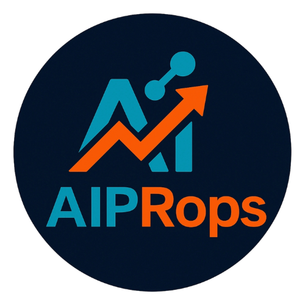

WhatsAppAyudamos a empresas a salir del revolú operativo y la improvisación, eliminando procesos manuales y diseñando sistemas inteligentes que aportan control, claridad y eficiencia real.
Hablemos de tu OperaciónAnalizamos cómo funciona tu operación hoy, identificando procesos manuales, ineficiencias operativas y riesgos ocultos.
Diseñamos sistemas personalizados, adaptados a la operación real de tu empresa, evitando software innecesario y costos innecesarios.
Eliminamos tareas repetitivas y desorganización para que tu empresa opere con control.
Una conversación clara y directa para entender tu operación, detectar dónde se pierde tiempo, dinero y control, y trazar los próximos pasos con claridad.